plot(Orange)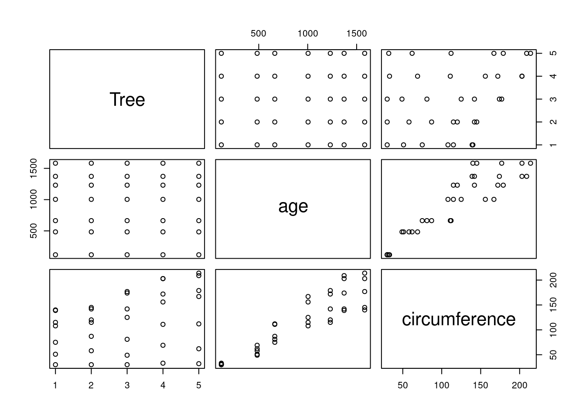
This is an R Markdown document containing code for the workshop “Accessing the USGS National Map and making 3D maps with terrainr”, held virtually on 2021-05-28. If you want to follow along with the workshop as we go, click this link to download the R Markdown notebook.
If you’re not familiar with R Markdown, this document lets us write both plain text and code in a single document. Document sections inside three ` marks are called “code chunks”:
plot(Orange)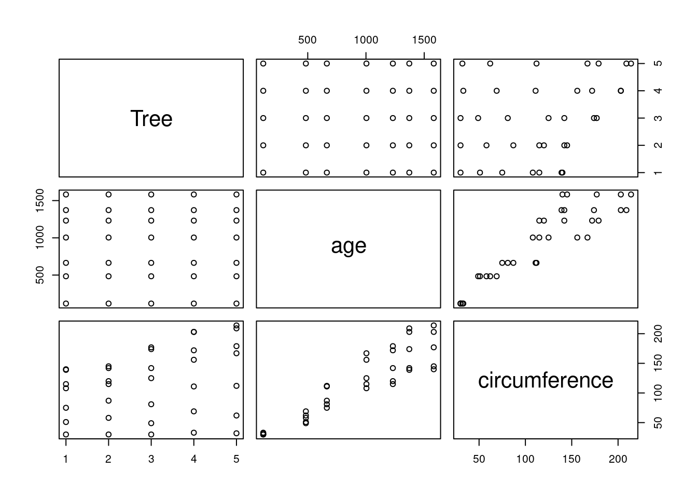
A single line in a code chunk can be run by pressing Control+Enter with your cursor on the line. The entire chunk can be run by pressing Control+Shift+Enter with your cursor inside the chunk.
For this workshop, we first need to install the packages that we’ll be using. This chunk will install any missing packages, and then load them all:
if (!require("sf")) install.packages("sf")Loading required package: sfLinking to GEOS 3.10.2, GDAL 3.4.3, PROJ 8.2.0; sf_use_s2() is TRUEif (!require("terrainr")) install.packages("terrainr")Loading required package: terrainrif (!require("ggplot2")) install.packages("ggplot2")Loading required package: ggplot2if (!require("scico")) install.packages("scico")Loading required package: scicoif (!require("raster")) install.packages("raster")Loading required package: rasterLoading required package: spif (!require("progressr")) install.packages("progressr")Loading required package: progressrif (!require("progress")) install.packages("progress")Loading required package: progressif (!require("tiff")) install.packages('tiff')Loading required package: tifflibrary("sf")
library("terrainr")
library("ggplot2")
library("scico")
library("raster")
library("progressr")
handlers("progress")Up next, let’s download some data! For the purposes of today’s workshop, we’ll work with campsite locations within Bryce Canyon National Park. We can download this data from the National Park Service using the read_sf function from sf:
campsites <- read_sf("https://opendata.arcgis.com/datasets/06993a2f20bf42d382c8ce6bd54027c4_0.geojson")This dataset can be found online at https://public-nps.opendata.arcgis.com/datasets/bryce-canyon-national-park-backcountry-campsites-?geometry=-112.494%2C37.471%2C-111.908%2C37.566
We now have an sf object containing a handful of campsite locations! We can plot our data using ggplot2 to get a sense of what the spatial distribution of the campsites looks like:
ggplot(campsites) +
geom_sf(shape = 4, color = "red") +
theme_void()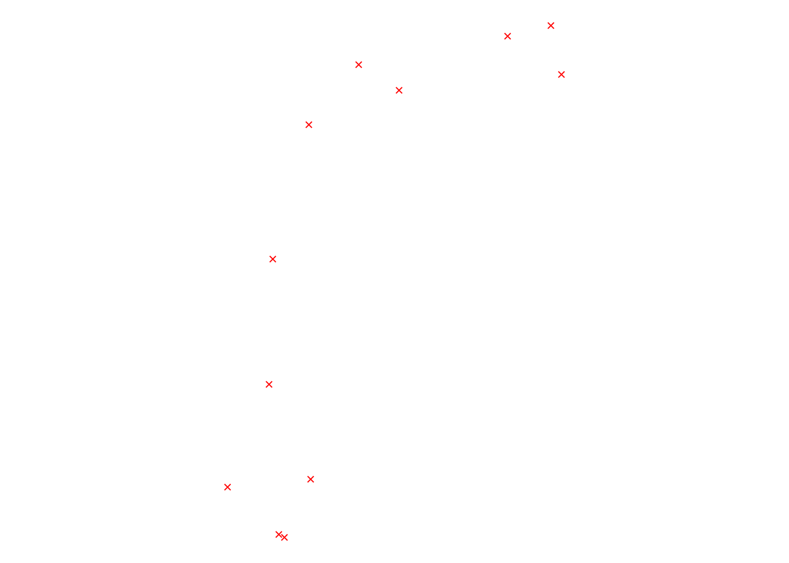
This is the area we want to download data for from the National Map. Note that everything we do from here on out works with pretty much any sf object; for instance, the terrainr documentation (at https://docs.ropensci.org/terrainr/) often starts with a single latitiude/longitude point and then works from there.
By default, terrainr will download data for the bounding box of whatever sf object you provide it. That is, data will only be downloaded for the smallest rectangle of area that includes your entire sf object.
In this case, we want a little bit of a buffer around our campsite locations so that our points aren’t at the exact edge of the map. To make that happen, we can use set_bbox_side_length to specifically control how much data to download. In this case, a 16 kilometer side length works pretty well:
campsite_bbox <- set_bbox_side_length(campsites, 16, "km")We can add this to our plot to make sure we’re giving a good buffer to our furthest points:
ggplot() +
geom_sf(data = st_set_crs(campsite_bbox, 4326), color = "black", fill = NA) +
geom_sf(data = campsites, shape = 4, color = "red") +
theme_void()
Since all of our points fall comfortably within this box, we can use it to download our data. We’ll use the get_tiles function to query the National Map to download elevation data (from the USGS 3D Elevation Program DEM) and orthoimagery (from the USDA National Agricultural Imagery Program). This function will break our query into smaller parts and then save the tiles as separate files; we can control where the files get saved by using the output_prefix argument.
We’ll wrap this query in the with_progress function in order to have a progress bar display while our data downloads. While for the purposes of this workshop we’ll be downloading 30 meter rasters, which download pretty quickly (and only require one tile per type of data), this can be very useful for monitoring downloads when using higher-resolution data.
with_progress(
output_tiles <- get_tiles(campsite_bbox,
output_prefix = "bryce_canyon_np_30m",
services = c("elevation", "ortho"),
resolution = 30)
)By assigning the output from get_tiles to output_tiles, we create a list of all of the map tiles we’ve downloaded:
output_tiles$elevation
[1] "bryce_canyon_np_30m_3DEPElevation_1_1.tif"
$ortho
[1] "bryce_canyon_np_30m_USGSNAIPPlus_1_1.tif"This can be really helpful when trying to work with these files inside R. For instance, to see our elevation raster, we can plot our data easily enough using functions from ggplot2. First, we’ll load the raster, then convert it to a data frame:
elevation <- raster(output_tiles$elevation)
elevation <- as.data.frame(elevation, xy = TRUE)
names(elevation) <- c("x", "y", "z")And then plot the data using geom_raster:
ggplot(elevation, aes(x, y, fill = z)) +
geom_raster() +
scale_fill_gradientn(colors = terrain.colors(255)) +
coord_sf(crs = 4326) +
theme_void()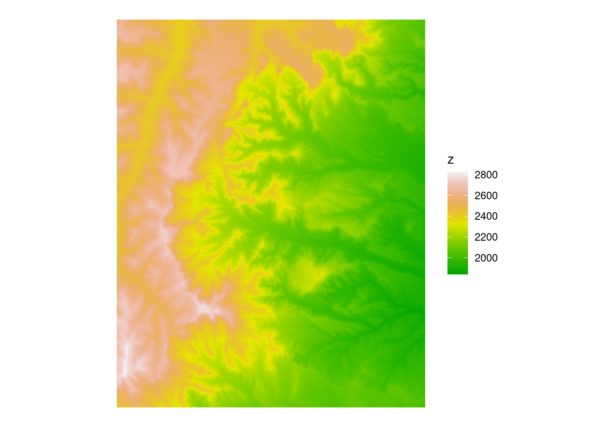
Plotting our orthoimagery is a bit of a different process; ggplot2 doesn’t by default have a great way to handle these multi-band rasters. This time, we need to use a new function from terrainr called geom_spatial_rgb:
ggplot() +
geom_spatial_rgb(data = output_tiles$ortho,
mapping = aes(x, y, r = red, g = green, b = blue)) +
coord_sf(crs = 4326) +
theme_void()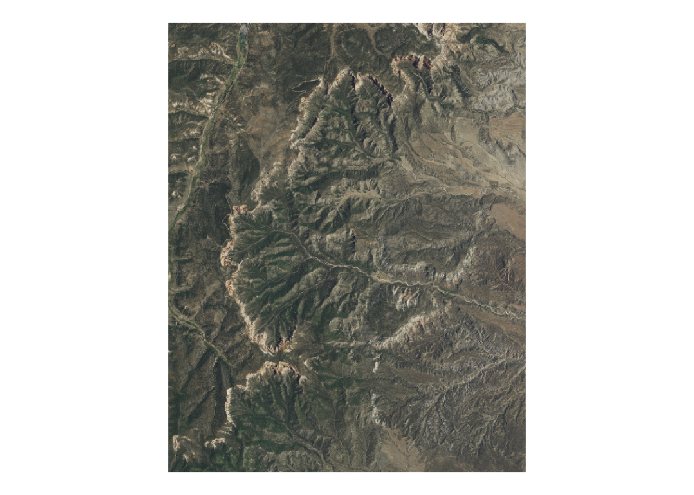
Notice we don’t need to convert our data to a data frame, like we did with elevation. When plotting basemaps with geom_spatial_rgb, you can provide RasterStack objects created by stack, or data frames, or file paths to the images you want to load.
Using ggplot2 makes it a lot easier to, for instance, plot our campsites on top of a base map:
ggplot() +
geom_spatial_rgb(data = output_tiles$ortho,
mapping = aes(x, y, r = red, g = green, b = blue)) +
geom_sf(data = campsites, shape = 4, color = "red") +
coord_sf(crs = 4326) +
theme_void()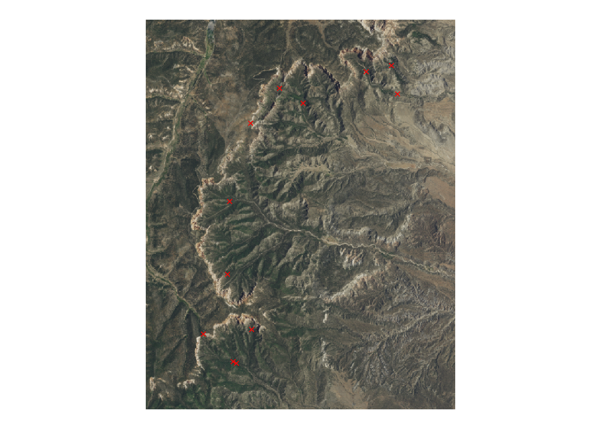
We can then continue to edit this map just like we would any other ggplot.
terrainr also provides a few options for editing our basemaps. If we want to, for instance, add our campsites to the orthoimagery, we can first create a new image from our campsite locations:
vector_to_overlay(
campsites,
output_tiles$ortho,
"campsite_overlay.png",
shape = 4,
color = "red"
)To combine this new image with our orthoimagery, we’ll want to use the combine_overlays function:
combine_overlays(
output_tiles$ortho,
"campsite_overlay.png",
output_file = "campsites_ortho.png"
)This function “stacks” images, putting the first image in the set at the bottom of the pile and the last image on the top. As a result, we now have our campsite locations on top of our orthoimagery, as a single image:
ggplot() +
geom_spatial_rgb(data = "campsites_ortho.png",
mapping = aes(x, y, r = red, g = green, b = blue)) +
theme_void() +
coord_fixed()Warning: [rast] unknown extent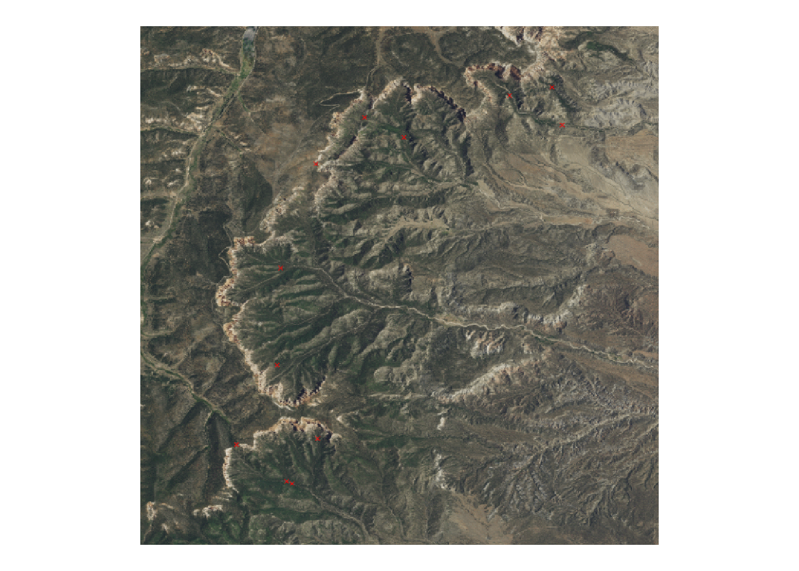
This process is particularly useful for combining multiple map tiles from the National Map into a single basemap, allowing you to overlay roads, rivers, and more on orthoimagery.
Now that we’ve seen a basic workflow using terrainr to pull layers from the National Map and plot with ggplot2, let’s have some fun with it! Starting with the latitude and longitude coordinates for a new site, we’ll create an sf object and add a spatial buffer around it like before.
# yosemite NP
site <- data.frame(lat = 37.7456, lng = -119.5521)
# convert to sf object and assign coordinate reference system
site_sf <- st_as_sf(site, coords = c("lng","lat"), crs = 4326)
# buffer around point
site_bbox <- set_bbox_side_length(site_sf, 10, "km")Now, to pull some data using terrainr. In the previous example we looked at elevation and orthoimagery. Other supported services are: nhd, govunits, contours, geonames, NHDPlus_HR, structures, transportation, and wbd. More info here: https://docs.ropensci.org/terrainr/#available-datasets
Let’s try elevation and contours this time:
with_progress(
site_tiles <- get_tiles(site_bbox,
output_prefix = "yosemite_np_5m",
services = c("elevation", "contours"),
resolution = 5)
)
site_tiles$elevation
[1] "yosemite_np_5m_3DEPElevation_1_1.tif"
$contours
[1] "yosemite_np_5m_contours_1_1.tif"Now we can convert the elevation and contour layers to plot with ggplot2. The contours layer is an RGBA multi-band raster layer, similar to the orthoimagery.
elevation <- raster(site_tiles$elevation)
contours <- stack(site_tiles$contours)
# look at structure of contours raster - has 4 layers
contoursclass : RasterStack
dimensions : 2000, 1999, 3998000, 4 (nrow, ncol, ncell, nlayers)
resolution : 0.00005689511, 0.00005689511 (x, y)
extent : -119.6089, -119.4952, 37.68869, 37.80248 (xmin, xmax, ymin, ymax)
crs : +proj=longlat +datum=WGS84 +no_defs
names : lyr.1, lyr.2, lyr.3, lyr.4
min values : 0.6000000, 0.4117647, 0.2235294, 0.0000000
max values : 1, 1, 1, 1 RGBA has 4 channels: red, green, blue, and alpha. The 4th channel, alpha, is like opacity. In this case, alpha is 0 in cells without contour lines and 1 where contours exist.
ggplot() +
geom_spatial_rgb(data = contours,
mapping = aes(x, y, r = red, g = green, b = blue)) +
coord_sf(crs = 4326) +
theme_void()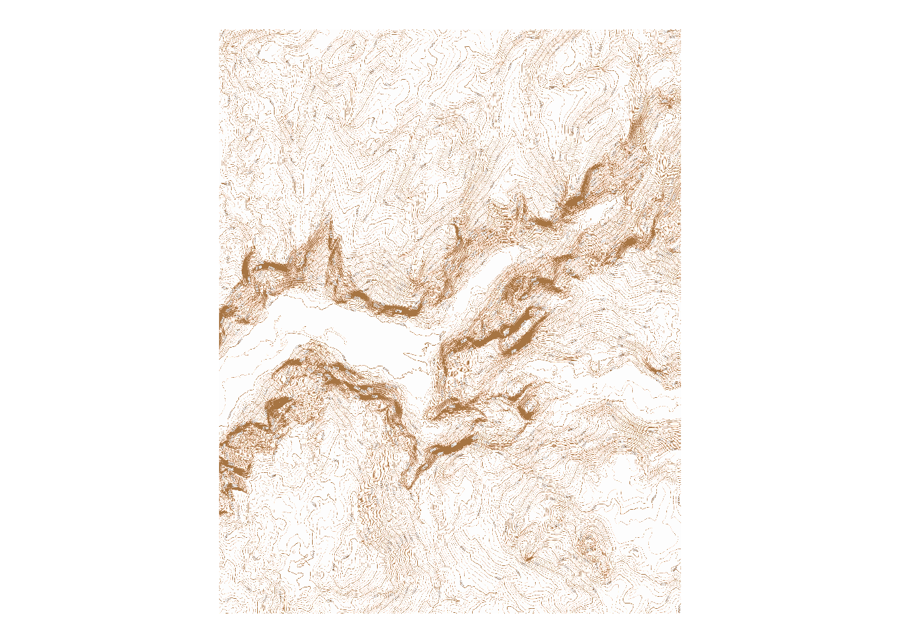
Contours reflect elevation, so let’s make it so! The next chunk stacks elevation and contours together and coverts to a dataframe to plot using geom_raster with ggplot2. Then, using the alpha channel, the dataframe is filtered to just the contour lines, and elevation values are used in the color scale.
contour_stack <- stack(elevation, contours)
contour_df <- as.data.frame(contour_stack, xy = TRUE)
names(contour_df) <- c("x", "y", "z", "r", "g", "b", "a") # longitude, latitude, elevation, red, green, blue, alpha
contour_lines <- contour_df[contour_df$a != 0, ]
## plot it!
ggplot(data = contour_lines)+
geom_raster(mapping = aes(x, y, fill = z))+
theme_void()+
theme(plot.background = element_rect(fill="black"),
plot.title = element_text(color="white"),
legend.position = "none")+
coord_sf(crs = 4326)+
scale_fill_scico(palette="imola", direction = 1)+
ggtitle(paste("Half dome", site$lat, site$lng))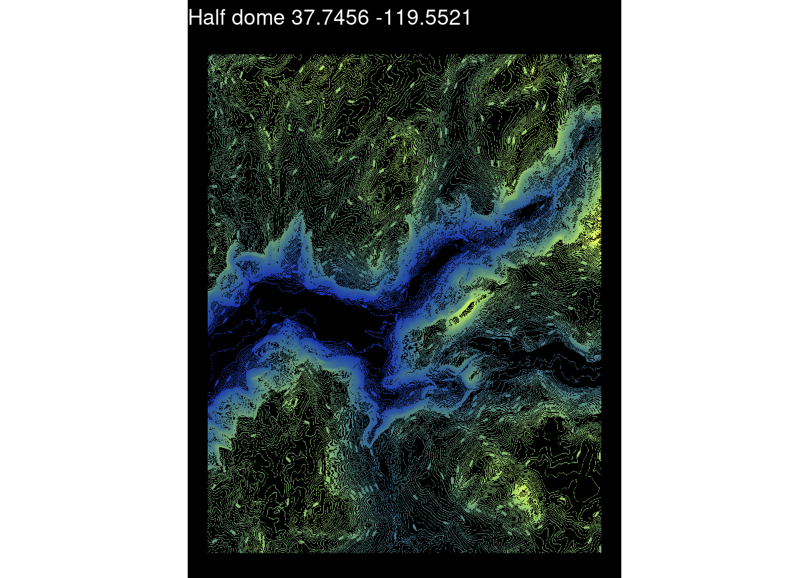
This chart uses the scico package for color scale. Scico (https://github.com/thomasp85/scico) offers a selection of color palettes developed for scientific applications. They are perceptually uniform to represent data fairly, and universally readable by both color-vision deficient and color-blind people.
scico_palette_show() # to see all palette options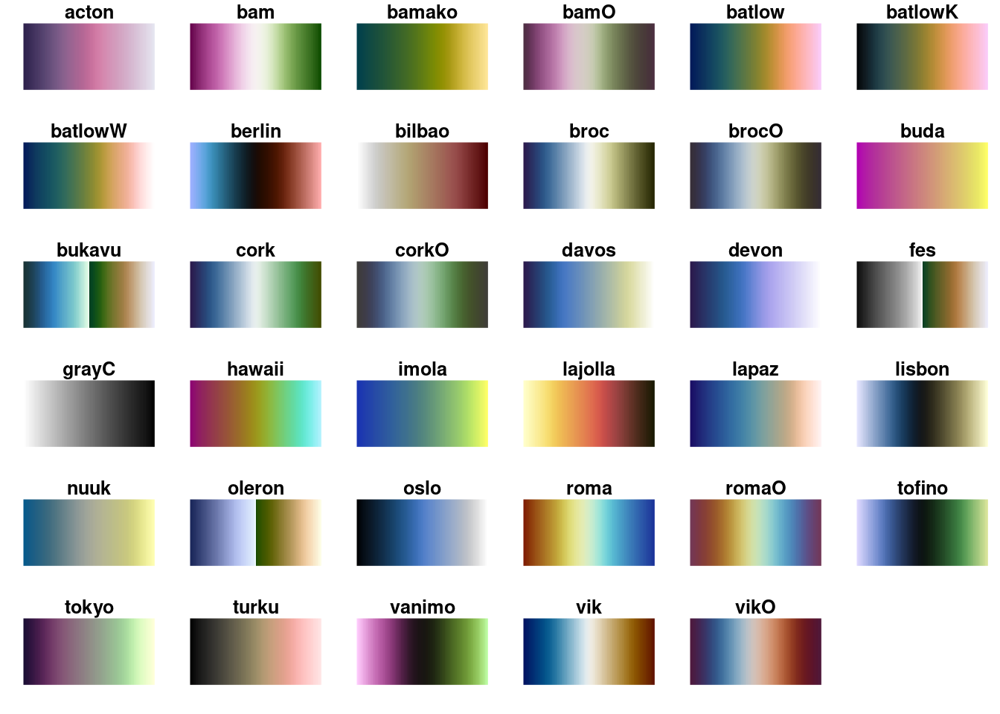
For the purposes of the workshop, we’re avoiding large downloads. But if we were to increase the resolution even more, say to 1m, terrainr might break up the focal region into multiple tiles:
## warning: running this code chunk will take over 5 minutes to complete
with_progress(
site_tiles_1 <- get_tiles(site_bbox,
output_prefix = "yosemite_np_10m",
services = c("elevation", "contours"),
resolution = 1)
)
site_tiles_1In which case they can be merged together using merge_rasters
merge_el <- terrainr::merge_rasters(site_tiles_1$elevation,
tempfile(fileext = ".tif"))
merge_co <- terrainr::merge_rasters(site_tiles_1$contours,
tempfile(fileext = ".tif"))Use the dataframe below to pull new starting coordinates and recreate the map in a new location, with new layer, or maybe a new color palette. Share what you made in the chat!
# dataframe of cool places in the US
places <- structure(list(name = c("half dome", "moki dugway", "badwater basin",
"mount whitney", "monument valley navajo tribal park", "devil's lake",
"cadillac mountain", "mcafee knob", "sleeping bear dunes ", "grand canyon",
"miguel's pizza at red river gorge", "between cumberland and blue ridge mountains",
"missouri river floodplain and bluff", "shawangunk mountains",
"lake winnipesaukee, new hampshire", "mount washington, new hampshire",
"gravity hill, pa", "orcas island", "grand canyon of yellowstone",
"mauna loa", "tetons", "rocky mountain biological station"),
lat = c(37.746036, 37.302306, 36.250278, 36.578581, 36.983333,
43.420033, 44.35127, 37.392487, 44.878727, 36.2388, 37.783004,
37.1177098, 38.568762, 41.72469, 43.606096, 44.270504, 40.153283,
48.654167, 44.895556, 19.479444, 43.75, 38.958611), lng = c(-119.53294,
-109.968944, -116.825833, -118.291995, -110.100411, -89.737405,
-68.22649, -80.036298, -86.066458, -112.350427, -83.682861,
-81.132816, -90.883408, -74.204946, -71.338624, -71.303115,
-76.839954, -122.938333, -110.389444, -155.602778, -110.833333,
-106.987778)), class = "data.frame", row.names = c(NA, -22L
))
# randomly pick one row from the dataframe above
site <- places[sample(nrow(places), 1), ]
# Or set your own by changing the values below and uncommenting
# site <- data.frame(ï..name = "skywalk @ grand canyon", lat = 36.011827, lng = -113.810931)
# convert to sf object and assign coordinate reference system
site_sf <- st_as_sf(site, coords = c("lng","lat"), crs = 4326)
# buffer around point
site_bbox <- set_bbox_side_length(site_sf, 10, "km")
# keep going! Using code from previous steps, make the rest of the map.
# Create site name for use as filenames:
site_fn <- gsub(" ", "_", gsub("[[:punct:]]", "", site$name))
# Download the appropriate data for your site from The National Map
with_progress(
site_tiles <- get_tiles(site_bbox,
output_prefix = sprintf("%s_5m", site_fn),
services = c("elevation", "contours"),
resolution = 5)
)
# COnvert to a raster stack
elevation <- raster(site_tiles$elevation)
contours <- stack(site_tiles$contours)
contour_stack <- stack(elevation, contours)
contour_df <- as.data.frame(contour_stack, xy = TRUE)
names(contour_df) <- c("x", "y", "z", "r", "g", "b", "a") # longitude, latitude, elevation, red, green, blue, alpha
# Remove zero elevations
contour_lines <- contour_df[contour_df$a != 0, ]
## plot it!
ggplot(data = contour_lines)+
geom_raster(mapping = aes(x, y, fill = z))+
theme_void()+
theme(plot.background = element_rect(fill="black"),
plot.title = element_text(color="white"),
legend.position = "none")+
coord_sf(crs = 4326)+
# Change the color palette used by editing the `palette` argument below!!
scale_fill_scico(palette="imola", direction = 1)+
ggtitle(paste(site$name, site$lat, site$lng))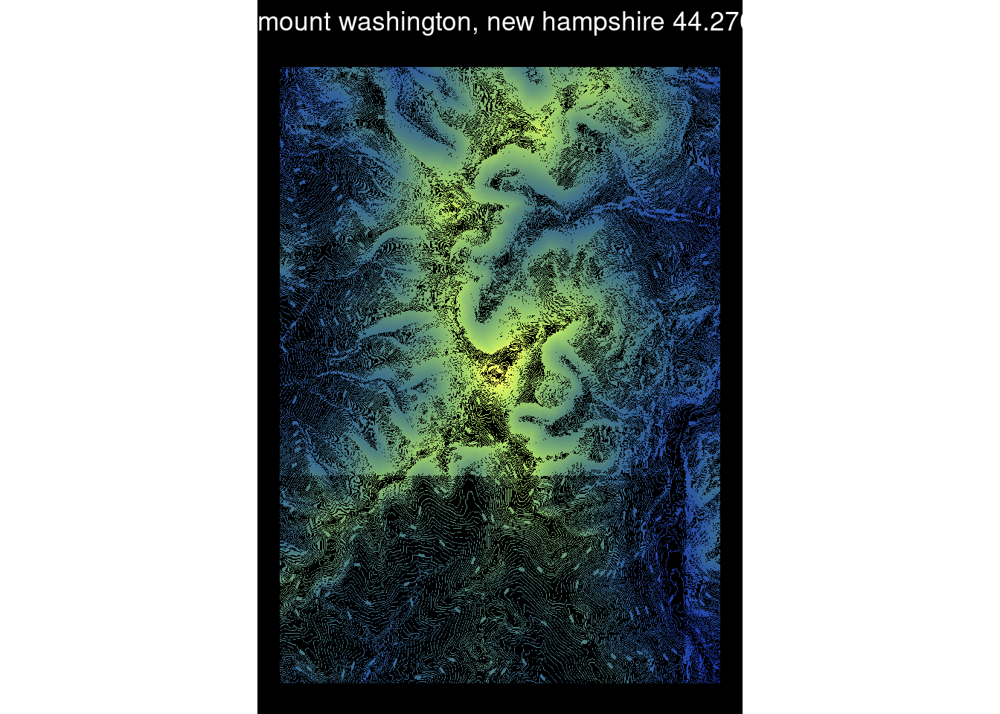
# If you want to save a higher resolution version (it makes the lines a little sharper)
# Run this after printing your plot:
# ggsave(sprintf("whimsical_topomap_terrainr_%s.png", site_fn), width=5, height=8)This part of the workshop will be performed as a demonstration, rather than a tutorial, due to the amount of time it takes to download the data while on video calls. The code used in the Unity demonstration is below – fair warning, it takes a (very) long time to run!
with_progress(
output_tiles <- get_tiles(campsite_bbox,
output_prefix = "bryce_canyon_np",
services = c("elevation", "ortho"))
)
mapply(
merge_rasters,
input_rasters = output_tiles,
output_raster = paste0(names(output_tiles), ".tif")
)
mapply(
raster_to_raw_tiles,
input_file = c("elevation.tif", "ortho.tif"),
output_prefix = "bryce_canyon",
raw = c(TRUE, FALSE)
)